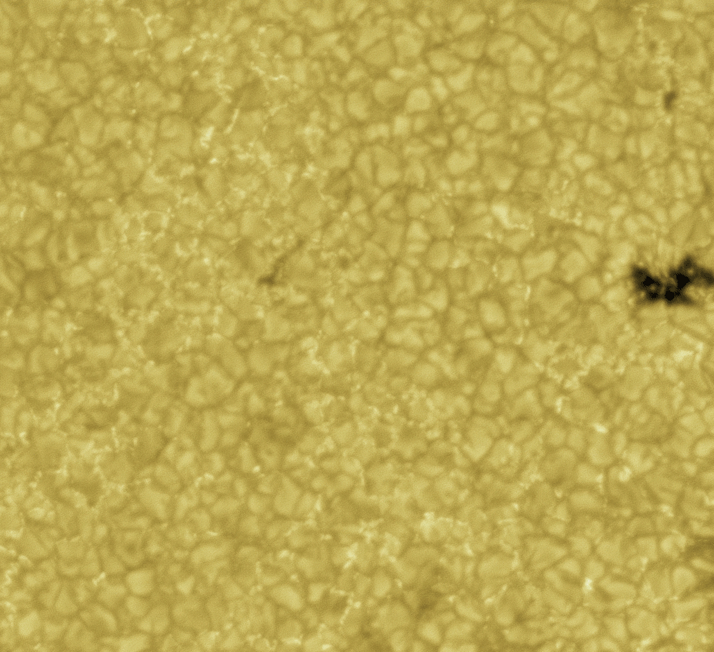

Du må bruke presentasjonsmodus/fullskjermsvisning for å lese denne, men du skal ikke bruke frem/tilbake-knappene, KUN knappene som dukker opp på sliden for å ta deg videre! Ofte må du laste filen ned til maskinen din og åpne den der for å få til dette. Merk at noen knapper vil åpne nettskjema, videoer eller andre ressurser i internettbrowseren din. Når du gjør det riktig, skal du kun se en side av gangen, og når du trykker på knappene som dukker opp på skjermen så skal disse ta deg frem/tilbake i dokumentet. Du vil miste mye læringsutbytte hvis du ser flere slides av gangen. Får du det ikke til, spør foreleser/gruppelærer!
Dette er en erstatning for forelesningen i emnet. Har du gått skikkelig gjennom disse interaktive forelesningsnotatene så trenger du ikke å lese de fulle forelesningsnotatene (med unntak av oppgavene bak). All informasjonen du trenger, får du her. Du kommer til å få mange grublespørsmål og diskusjonsoppgaver, det er meningen at disse skal gjøres i grupper av minst 2, maks 4 studenter. Det er defor sterkt anbefalt at dere sitter sammen i grupper når dere går gjennom disse interaktive forelesningsnotatene, du vil få betydelig mer utbytte av dem på den måten. En god ide kan være å bli enige om å treffes til den faste forelesningstiden og bruke forelesningslokalet som kommer til å være resevert til dette. Hvis du har kommentarer ris/ros til disse forelesningsnotatene eller til emnet, trykk på 🙂 🙁 knappen som du finner på alle sider.
HUSK at du får mer ut av de interaktive forelesningsnotatene når du gjør de sammen med noen. Diskusjonene med andre er svært viktige.
Det er mange spørsmål/grubliser underveis, sett dere selv en tidsgrense, 1-2 minutter på de korte, 4-5 minutter på de lenger. Ha en alarm ved siden av, ellers kommer dere til å bruke alt for langt tid. Har dere ikke fått det til etter 5 minutter, gå videre, se svaret og lær!
Er du i det minste tvil om noe, så finnes det nå en PADLETknapp, trykk det og still spørsmål med en gang mens du enda husker spørsmålet!
Forrige side Velkommen til forelesning 2 av 2 for del 3D! I den første forelesningen så vi litt på stjernenes plasser i HR-diagrammet og hva det innenbærer at stjernene er på hovedserien. Nå skal vi se hva som skjer i alderdommen.Den første forelesningen i del 3D tar normalt ca. 1 time i den fysiske forelesningen, dvs. halvparten av en dobbelttime. Den andre delen av del 3D er lenger og tar normalt en hel dobbeltime. (Illustrasjon: Solen observert med Solar Dynamics Observatory (Image: NASA/SDO))Neste side
Forrige side🙂 🙁IntroduksjonPADLET HUSK: som vi sa i slutten av forrige forelesning, så trenger denne forelesningen forberedelse: Du må lese og lære så godt du kan underavsnitt 3 om “From the main sequence to the giant stage” i del 3D. Hvor var vi igjen i siste forelesning? La oss begynne med siste side av forrige forelesning...
Forrige side🙂 🙁IntroduksjonPADLET
Det er helt riktig!. $$P=\frac{\rho kT}{\mu m_H}$$ Her øker jo μ ettersom vi få mer og mer helium. Husk at μ er et mål på midlere masse til atomkjernene, hvis vi får mer helium som er tyngre og mindre hydrogen etter kjernereaksjoner så må μ øke! Fra tilstandslikningen ser vi at hvis μ øker, så må trykket minke. Og hvis trykke blir mindre, så vinner gravitasjon litt! Og hvis gravitasjons da klarer å presse stjernen litt mer sammen så vil radien med tiden bli litt mindre.. Stjernen krymper litt på hovedserien, men på meget sakte tidsskala. Men hvor lenge holder den på med dette da? Hvor lenge lever stjernen på hovedserien? Det må vel være til den har brukt opp alt hydrogenet i de sentrale delene av stjernen der fusjonsreaksjonene foregår, men hvor lang tid tar dette?
Forrige side🙂 🙁IntroduksjonPADLET
Vi skal på de neste sidene gjøre overslagsregning for å finne ut hvor lenge en stjerne lever på hovedserien. Vi skal mikse samen masse forskjellige uttrykk og bruke de villeste antakelser for å gjøre det lett å regne og kommer frem til sammenhenger som stemmer ganske godt med det man finner i avanserte datasimuleringer av stjerner og med det man observerer! Hvis du ikke har planer om å gjøre karriere som forsker i astrofysikk, så tenker du kanskje at dette er helt irrelevant for deg?Da tar du grundig feil. For mange av dere som skal ut i “vanlige” jobber, så er det som vi gjør på de neste sidene sannsynligvis noe av det mest arbeidslivsrelevante dere gjør i bacheloren.Den må du lenger ut på landet med!
Vel, mange av dere kommer til å jobbe med modellering av komplekse systemer, det kan være veldig forskjellige systemer fra modellering av trafikken på veiene eller modellering av fisk og småkryp i en elv (eksempler på jobber som tidligere masterstudenter i astronomi faktisk gjør). Modellering av komplekse systemer kan være svært vanskelig hvis du ikke først finner noen virkelig kraftige men likevel ikke helt gale antakelser...
Forrige side🙂 🙁IntroduksjonPADLET
...og du må ofte kombinere forskjellige grener av fysikken eller også helt andre fagfelt for dermed å komme frem til en sterkt forenkelt modell. Dette er snakk om teft, det å ha gjort det mange ganger på mange forskjellige systemer!Ok, men hva skal man med en slik forenklet modell da?
Når du har funnet en slik sterkt forenklet modell, kan du
begynne å finne enkle sammenhenger som gjør at du får litt fysisk intuisjon for systemet ditt
bruke denne som grunnlag for en langt mer kompleks og realistisk modell/simulering
bruke denne til å teste den mer kompliserte modellen i enkle tilfeller
Forrige side🙂 🙁IntroduksjonPADLET
Med master i fysikk/astrofysikk blir du ofte ansatt nettopp for at du har erfaring med en slik prosess, ikke bare fordi du kan programmere for å løse problemer med datamaskin. Til det siste ansetter de like gjerne en informatiker. Det en fysiker har å tilby i tillegg er nettopp denne forståelsen av store og komplekse systemer, det å kunne bruke fysisk forståelse til å finne gode forenklinger, antakelser og sammenhenger som gjør at du kan forstå og beskrive systemet på en enkel måte.Det er akkurat det vi skal gjøre nå på de neste sidene...
Forrige side🙂 🙁IntroduksjonPADLET ... så følg godt med og prøv å tenke deg at du har blitt ansatt av et firma som har en utmerket ide: å lage en kjempestor gasskule der hydrogenfusjon brukes til å lage energi. Før milliarder av kroner brukes på å konstruere denne gasskula, skal du bruke det du kan om fysikk til å gjøre overslag for å finne ut f.eks. hvor mye energi vi kan få og hvor lang levetid en slik fusjonsreaktor vil kunne ha. Og spesielt hvor stor masse bør en slik kule ha for å optimalisere energien vi utvinner? Hva er sammenhengen mellom massen og energien vi får?
Du får nå en laaaaaaaang utledning. Har du en kaffemaskin i nærheten? Har du sovet godt? Er hjernen klar? Hvis svaret er nei på noen av disse spørsmålene, bør du vente med dette til du er klar! Men frykt ikke, vi skal ta en pause omtrent midtveis, men ta gjerne flere på eget initiativ.OK, jeg trekker pusten godt nå og er klar...
Forrige side🙂 🙁Levetid på hovedserienPADLET
La oss begynne med et enkelt spørsmål først. Anta at du kjenner massem M til gasskula (aka stjerna), at fusjonsreaksjoner kun foregår i kjernen som utgjør en andel p av massen til kula. Anta videre at vi kjenner luminositeten L. Kan du finne et uttrykk for hvor lenge denne stjerna kommer til å produsere energi ved at hydrogen fusjonener til helium? Jeg har skrevet ned et forslag
Så total masse som blir fusjonert er pM. Masse går over til energi via uttrykket E = mc2 der c er lysfarten, så total energi som blir produsert i løpet av hele stjerna (unnskyld, gasskula) sin levetid må være E = pMc2. Og energien som produseres per tid er L. Da må vel levetiden bli $$t_\mathrm{life}=\frac{pMc^2}{L}$$ Ok, da mangler vi “bare” luminositeten L for å finne levetida. Men det er ikke bare-bare...
Forrige side🙂 🙁Levetid på hovedserienPADLET For hvordan kan du lage et overslag for luminositeten til en fusjonerende gasskule? Du kan anta at du kjenner massen og radien. Du kjenner ikke levetida. Hvor begynner du? Si at du kan anta de aller villeste forenklinger, kan du da komme på noen forslag?
Forrige side🙂 🙁Levetid på hovedserienPADLET Har du fått ned noen ideer på papiret? Du kan jo ikke få sparken allerede før du har begynt! Noe, må du kunne vise frem for at firmaet enda skal ha tiltro til deg.
Forrige side🙂 🙁Levetid på hovedserienPADLET Ta ihvertall 5-10 minutter, diskuter med medstudenter og skriv ned i det minste noen konsepter eller bruddstykker av ideer og ting som du kanskje kunne bruke på en eller annen måte. NOE må du få ned på papiret. Det står om karrieren din!
Forrige side🙂 🙁Levetid på hovedserienPADLET
Allright, la oss prøve å dele opp problemet litt, det pleier å være et godt startpunkt. Vi vet at luminositet er definert som $$L=\frac{\Delta E}{\Delta t}$$ La oss tenke oss at vi kan slå av og på kjernereaksjonene i sola, ok? Vi slår de på et kort lite øyeblikk og får produsert en energi ΔE i løpet av dette øyeblikket. Og så venter vi!. Vi venter til all denne energien har kommet frem til overflaten av sola og blitt strålt ut. Det tar langt tid, husk at radien til sola er 800.000 km!. Anta at vi finner tiden Δt. Da kan vi putte inn i formelen over her for å finne luminositeten. En energi ΔE som ble strålt ut i løpet tiden Δt. Og slik holder vel sola egentlig på hele tida? I hvert lite øyeblikk lager den energi ΔE som trenger tiden Δt på å komme ut. Hvis vi finner ΔE og Δt, så har vi luminositeten!
Forrige side🙂 🙁Levetid på hovedserienPADLET
Før vi kan se noe nærmere på det, må vi nesten se hvordan energien transporteres fra sentrum av en stjerne og opp til overflaten. Det finnes 3 hovedprosesser for energitransport gjennom et medium:
Energitransport ved stråling: Her er det rett og slett fotoner som beveger seg utover og tar med seg energien. Tenk deg en glødende varmeovn, varmestrålingen treffer deg og avgir energien. Energien transporteres gjennom lufta til deg.
Energitransport ved konveksjon: Konveksjon er når varm gass/væske beveger seg opp til områder der gassen/væsken er kaldere og avgir energi. Tenk deg en kokeplate: vannet i bunnen av kjelen varmes opp, den flyter opp (kokebobler!) til de kaldere områdene og avgir varme. Energien transporteres oppover i kjelen
Energitransport ved konduksjon: Tilbake til kjelen over: anta at du setter den på kokeplata uten vann i. Da transporteres varmen gjennom metallet, gjennom en kjedereaksjon av kollisjoner mellom atomer i metallet. Dermed blir også de øvre delene av kjelen som ikke er i kontakt med plata varm. Energien transporteres gjennom metallet i kjelen.
Forrige side🙂 🙁Levetid på hovedserienPADLET
I stjerner er det hovedsaklig energitransport ved stråling og/eller ved konveksjon. Energien kan transporteres fra kjernen via fotoner eller via gassmasser som beveger seg oppover i stjerna akkurat som kokeboblene. I sola så foregår energitransport ved stråling opp til ca. 0.7R⊙ og deretter ved konveksjon opp til overflaten. Her ser du bilde av konveksjonscellene (kokeboblene) på solas overflate:

Du kan se tilsvarende video her. (Credits: NASA/JAXA/Hinode)
Forrige side🙂 🙁Levetid på hovedserienPADLET En av antakelsene våre skal være at all transport skjer med stråling. Det er lettere å ha kontroll på fotoner som beveger seg utover enn store gassmasser. Da er vi klare her til å prøve å finne hvor stor energi ΔE som trenger tid Δt på å komme seg ut av sola. Og derav finne Luminositeten...
Forrige side🙂 🙁Levetid på hovedserienPADLET
La oss begynne med energien ΔE som forlater stjerna. Den energien som frigjøres i fusjonsreaksjonene omgjøres til kinetisk energi for partiklene i kjernen av stjerna samt stråling. Det blir til slutt en likevekt mellom fotonene (strålingen) og gasspartiklene. Fusjonsreaksjonene varmer på den måten opp kjernen til en kjernetemperatur Tc (“C” for Core, kjernen er hele det sentrale området av stjerna der fusjon foregår). Vi ser på kjernen som et sort legeme som sender ut termisk stråling på temperatur Tc, Planck-stråling!. Ved så høy temperatur som vi har i kjernen av en stjerne så blir denne sorte strålingen intens Bare prøv å tegne Plancks strålingskurve for en temperatur på flere milllioner grader, eller se på fluksen fra Stefan Boltzmann, eller Wiens forskyvningslov, hvilke bølgelenger får vi fra et sort legeme med så høy temperatur?
Forrige side🙂 🙁Levetid på hovedserienPADLET
Ved så høy temperatur blir det så mange fotoner i de sentrale delene av en stjerne at vi snakker om en fotongass. Rett og slett massevis av fotoner som svirrer rundt og kolliderer med gasspartikler. Fotonene oppfører seg dermed selv som gasspartikler og vi kan med rette bruke begrepet fotongass. En stjernes kjerne består dermed av varm hydrogen(++)gass blandet med denne fotongassen.Vi har altså hele tiden et energireservoar i stjernens kjerne i form av fotoner.I termodynamikken kommer du til å lære at energitettheten ρE (energi per m3) i en fotongass er gitt ved ρE = aT4 der a er strålingskonstanten (husker du fra del 1E at trykket i en fotongass er $P=\frac{1}{3}aT^4$?). (Og T4 for et sort legeme kan du kanskje tippe hvor kommer fra?)
Forrige side🙂 🙁Levetid på hovedserienPADLET Hvis vi antar at kjernen til stjerna har en radius Rc, har du nå kommet noe nærmere hvordan du kan gå frem for å finne luminositeten?? Hva kan vi bruke som denne energi ΔE som skal slippe ut i løpet av tiden Δt?
Forrige side🙂 🙁Levetid på hovedserienPADLET Hvis du ikke nå har kommet noe nærmere løsningen. Anta at vi nå skrur av alle kjernereaksjoner i sola. Hvor mye energi ΔE kommer den til å stråle ut før den slukner?
Forrige side🙂 🙁Levetid på hovedserienPADLET
Med energitetther ρE = aTc4 og kjerneradius Rc så får vi vel at den totale energien i en stjernes kjerne i fotoner til enhver tid er gitt ved $$E=\frac{4}{3}\pi R_c^3aT_c^4$$Her har vi allerede gjort en stor antakelse, kan du se hvilken?Tjaaaaa....
Tror du virkelig temperaturen og dermed energitettheten er den samme gjennom hele kjernen? Det er vel en ganske grov antakelse? OK, her er planen: Slår vi av kjernereaksjoner, så er det energien ΔE i alle disse fotonene som er igjen å stråle ut av sola. Det store spørsmålet hvor lang tid Δt denne energien, altså alle disse fotonene trenger for å komme frem til solas overflate? Har vi det, har vi luminositeten L = ΔE/Δt. Noen forslag til hvor vi kan starte for å finne ut hvor lang tid fotonene trenger for å komme seg ut?
Forrige side🙂 🙁Levetid på hovedserienPADLET Ikke det?? La oss ta det litt rolig her: Anta at et foton hele tiden kolliderer med gasspartikler og skifter retning. Den midlere veilengden som et foton går mellom hver kollisjon kaller vi ℓ. Hvor mange kollisjoner N får et foton før det når overflaten av stjerna? Klarer du å vise at det er $$N=\frac{R^2}{\ell^2}$$ ??? Og gitt dette, klarer du å vise at fotonet i gjennomsnitt trenger en tid $$\Delta t=\frac{R^2}{\ell c}$$ der c er lyshastigheten til å komme seg opp til overflaten? Her bør du sette av 5-10 minutter til å se om du klarer å komme i mål selv. Spesielt det siste uttrykket bør du får til, gitt at du kjenner det første. Det første uttrykket er noe mer tricky, men ikke mer enn at du ihvertfall bør kunne sette opp starten av utregningen (og en tegning av fotonets vei fra stjernas sentrum og ut vil hjelpe mye!.
Forrige side🙂 🙁Levetid på hovedserienPADLET Har du gjort et skikkelig forsøk og kommet et stykke på vei? Hvis ikke, gå tilbake og prøv igjen, noe må du få til for a betrygge arbeidsgiveren din her om at du jobber med saken!
Forrige side🙂 🙁Levetid på hovedserienPADLET
Se denne videoen her for å sette sammen bitene og finne ut hvorfor $$N=\frac{R^2}{\ell^2}$$ og $$\Delta t=\frac{R^2}{\ell c}$$ Henger du med? Kan du nå skrive ut uttrykk for luminositeten L ved hjelp av de størrelsene du har nå?
Forrige side🙂 🙁Levetid på hovedserienPADLET Nå begynner moroa her! Nå skal du gjøre noe som man alltid må gjøre når man prøver å forstå et komplekst system.Med alle tilnærmingene vi gjør og med den fulle kompleksiteten til systemet så har vi ingen sjans til å finne uttrykk med presise tallstørrelser.Det vi kan finne, og som kan være minst like interessant som tallstørrelser er proporsjonaliteter.Dvs. f.eks. hvordan endrer luminositeten eller stjernas levetid seg som funksjon av totalmassen? Altså hvis vi dobbler massen, hva skjer med luminositeten?Dette vil si oss veldig mye om effektiviteten til gasskula vår selv om vi ikke nødvendigvis får ut eksakte tall for luminositeten!
Forrige side🙂 🙁Levetid på hovedserienPADLET
Denne typen fysikk-overslagsregning er ikke bare noe man driver med i arbeidslivet, det er også noe en forsker i fysikk driver med hele tiden, og du kommer til å bruke det i masteroppgaven. Dette er kanskje litt uvant da de første semesterne i fysikkstudiet ofte blir brukt til mye eksakt (men urealistisk) regning. Da var det jaggu på tide at du får prøve deg her! Fra det vi har gjort så langt, vis at luminositeten til stjerna kan skrives med følgende proporsjonalitet (legg merke til ∝ tegnet for proporsjonalitet) L ∝ RTc4ℓ Hvis du tviler, ta en titt på denne videoen
Forrige side🙂 🙁Levetid på hovedserienPADLET
Hva med den midlere veilengden ℓ for fotonet? Den avhenger at en enkelt egenskap ved gassen. Hvilken? Og hva er proporsjonaliteten??. Prøv å tegne en boks med gasspartikler, fordel partiklene så jevnt utover i boksen som mulig. Tegn inn et foton et sted i midten. Hvilken egenskap ved gassen avgjør hvor langt fotonet i gjennomsnitt kan bevege seg før det kolliderer? Og hvordan kan du nå skrive proporsjonaliteten med denne egenskapen, altså ℓ ∝ ?? Ikke bla om før du har gjort et skikkelig forsøk.
Forrige side🙂 🙁Levetid på hovedserienPADLET Det ble nok ikke rett! Har du tegnet opp partiklene? Har du prøvd med en ny tegning når du f.eks. har dobblet størrelsen på den egenskapen ved gassen som du tror er viktig her? Har du sett hvordan ℓ da bør endre seg? Hvis du har kommet hit for andre gang, se på denne videoen
Forrige side🙂 🙁Levetid på hovedserienPADLET
Det er helt riktig! Hvis du enda er usikker, ta en titt på denne videoen . Kan du nå vise at $$L\propto\frac{R^4T_c^4}{M}$$ ??? Det bør du få til nå, hvis ikke, spør foreleser!
med mye sukker! Og jammen bør du ta en tur bortom kantina eller kiosken og se om de har en sjokoladebit eller kakebit? Det har du fortjent nå. Ihvertfall bør du ta turen om du så ikke kjøper noe, en luftetur er påkrevet før du fortsetter! Ikke lov å fortsette før du har tatt minst 15 min. pause!
Forrige side🙂 🙁Levetid på hovedserienPADLET
La du merke til hvilken vannvittig antakelse du brukte her?? Du antok at tettheten til stjerna er den samme gjennom hele stjerna, altså uniform tetthet! Det er ikke veldig realistisk, men tettheten vil jo være tettere enn dette i kjernen og tynnere enn dette mot overflaten, kanskje det blir ok i gjennomsnitt likevel?
Vi har nå altså en proporsjonalitet $$L\propto\frac{R^4T_c^4}{M}$$ for luminositeten som funksjon av massen og radien til stjerna i tillegg til kjernetemperaturen Tc.
Forrige side🙂 🙁Levetid på hovedserienPADLET Men det er vital informasjon som vi ikke har brukt! Og her kommer et annet viktig punkt når det kommer til fysikk-overslagsregning: du må få med all informasjonen du har om systemet! Kan du tenke deg noen sammenhenger som vi kjenner til men enda ikke har benyttet? Det er flere enn en! Ikke gå videre før du har skrevet ned minst en ting til som du vet om dette systemet og som kan være bruklig for å komme frem til en enda enklere sammenheng for luminositeten!
Forrige side🙂 🙁Levetid på hovedserienPADLET Hadde du hydrostatisk likevekt på lista di? Kan du vise at likningen for hydrostatisk likevekt kan gi deg en sammenheng alla $$P_c\propto\frac{M^2}{R^4}$$ der Pc er trykket i kjernen??? Du skal snart få tenke videre på denne, men la oss ta det litt videre først! Husk at det vi ønsker nå er å få proporsjonaliteten $$L\propto\frac{R^4T_c^4}{M}$$ så enkel som mulig!
Forrige side🙂 🙁Levetid på hovedserienPADLET
Tenk deg altså at du har fått $$P_c\propto\frac{M^2}{R^4}$$ fra hydrostatisk likevekt. Men hva hjelper det oss for å få proporsjonaliteten for L enklere? Nå har vi jo fått inn en ny variabel her, trykket P, og da blir det jo ikke enklere men vanskeligere! MEN så finnes det en sammenheng til for gassen som du bør kunne tenke deg. En sammenheng mellom blant annet trykk og temperatur slik at vi blir kvitt trykket i uttrykket her, får inn Tc isteden, og dermed kvitter oss med Tc i uttrykket på forrige side. Da snakker vi om forenklinger da! Kan du vise, ved å sette inn denne sammenhengen for P at vi da får en sammenheng som sier$$T_c\propto\frac{M}{R}$$ som altså er veldig fristende å bruke for å kvitte oss med Tc i uttryket for L på forrige side.
Forrige side🙂 🙁Levetid på hovedserienPADLET Tilbake til proporsjonaliteten for P som du skal finne fra hydrostatisk likevekt... Fikk du det til? Det er ikke lov å gå videre uten å ha noe forslag, selv om du ikke kommer helt frem. Nå er vi nesten fremme ved det endelige uttrykket her. Firmaet vi jobber for begynner å blir riktig så fornøyd, dette ser lovende ut, vi har nesten gjort jobben vår som en god fysiker! Du kan ikke skuffe dem nå?
Forrige side🙂 🙁Levetid på hovedserienPADLET
I denne videoen ser du hvordan man kan gjøre forenklingen med hydrostatisk likevekt og hva den andre kjente sammenhengen var som gjør at vi kommer frem til at $$T_c\propto\frac{M}{R}$$ som innsatt i $$L\propto\frac{R^4T_c^4}{M}$$ gir oss...ja hva gir det...
Forrige side🙂 🙁Levetid på hovedserienPADLET
Lo and behold, det gir oss L ∝ M3 Så vanvittig enkelt? Et så komplekst system og en så enkel relasjon? Men hva sier de store avanserte datamodellene da? De som kjører på 1000-vis av prosessorer i flere måneder?
Forrige side🙂 🙁Levetid på hovedserienPADLET
De sier L ∝ Mβ hvor β avhenger litt av massen til stjerna. For stjerner med veldig stor masse, titalls solmasser, så passer β = 3 slik vi fant ganske godt! Merk at slike stjerner har energitransport med stråling gjennom hele stjerna, akkurat slik som vi antok. For stjerner med mindre masse slik som sola så er β = 4 en bedre tilnærmelse. Den gjelder for flere stjerner, så vi skal bruke den i dette kurset.Men er det ikke helt utrolig at vi kom frem til nesten det samme med en utrolig enkel utledning med store og grove antakelser?
Forrige side🙂 🙁Levetid på hovedserienPADLET
Hvilke antakelser var det vi gjorde igjen?
energitransport med stråling gjennom hele stjerna (er sant for veldig massive stjerner)
uniform temperatur i hele stjernens kjerne (der det foregår kjernereaksjoner)
uniform tetthet gjennom hele stjerna
at trykket går som P(r) ∝ rn gjennom hele stjerna
ideel gass
Pluss en del mer subtile antakelser som vi ikke nevner. Flere av disse antakelsene er ikke spesielt gode, men det at vi ser på et stort system, midler over størrelser som f.eks. både høyere og lavere tetthet enn den uniforme tettheten som vi antar, så kommer vi likevel frem til noe som stemmer godt med virkeligeheten.
Forrige side🙂 🙁Levetid på hovedserienPADLET
Så hva sier denne sammenhengen oss: L ∝ M4 (som er den varianten som vi skal bruke siden den passer på langt flere stjerner enn L ∝ M3 som vi kom frem til med alle forenklingene våre)
En stjerne som er dobbelt så massiv som sola, hvor stor luminositet har den? Jeg har det, jeg har det!
Nettopp, ja 16 ganger mer energi per sekund enn sola. Og bare dobbel masse! Dette er jo vital informasjon for arbeidsgiveren vår som skal bygge en fusjonsreaktor som er en stor gasskule! Jobben fullført! Ihvertfall den innledende fasen. Hvis behovet for energi er stort, så ha stor masse. Men det var en problemstilling til som vi begynte med, var det ikke? Hvor lenge lever en slik stjerne?
Forrige side🙂 🙁Levetid på hovedserienPADLET Nei, det ble ikke rett! Er du enig i at $$t_\mathrm{life}=\frac{pMc^2}{L}\propto\frac{M}{L}$$ Og hvis L ∝ M4, ja da bør du komme frem til ... gå tilbake og prøv igjen.
Forrige side🙂 🙁Levetid på hovedserienPADLET
Det er helt riktig! Kan du nå vise at $$t_\mathrm{life}\propto\frac{1}{M^3}$$ Altså en stjerne som er dobbelt så massiv som solen vil leve i ... Shit! Strek i regningen!
Bare 1/8 av solas levetid? Tuller du? Da faller jo ideen i grus her, med stor masse får vi masse energi ut, men så blir fusjonsreaktoren “brukt opp” i løpet av en mye kortere tid!
Forrige side🙂 🙁Levetid på hovedserienPADLET
Når vi først er igang, så la oss gjøre et overslag til. Kan vi si noe om overflatetemperaturen på denne gasskula? Jeg mener, hvis vi skal ha denne fusjonsreaktoren i nærheten av oss, da bør den vel ikke være for varm på overflaten! Dette skal du få finne ut av selv, men et hint: kjernetemperaturen som skal til for å starte fusjon er jo en felles faktor her, det er derfor liten variasjon i kjernetemperaturen i hovedseriestjerner. Vi skal anta at kjernetemperaturen Tc er konstant. Og du fant tidligere en proporsjonalitetsrelasjon for denne. Kombiner det med noe du vet om sammenheng mellom luminositet og fluks og sånt. Og vips så fant du... En proporsjonalitetsrelasjon mellom overflatetemperaturen T på en stjerne og massen M! Når du har funnet den kan du gå til...
Forrige side🙂 🙁Levetid på hovedserienPADLET
Fikk du det ikke til, ta en titt på denne videoen .
Vi har altså kommet til følgende relasjoner...L ∝ M4$$t_\mathrm{life}\propto \frac{1}{M^3}$$$$T_\mathrm{overflate}\propto\sqrt{M}$$
Men disse er bare proporsjonaliteter. Vi kan ikke bruke de til å finne tall, eller?. Joda, fordi...
...naturen har allerede laget en prototyp av denne fusjonsreaktoren for oss. Den heter sola (egentlig har den laget en tilnærmet uendelig mengde av slike prototyper). Ser du at ved å bruke de kjente tallene for M, L, tlife (10 milliarder år for sola) og Toverflate, så har vi alt vi trenger for å finne proporsjonalitetskonstantene i deiise relasjonene? Og da kan du regne ut tall!
Forrige side🙂 🙁Levetid på hovedserienPADLET
Det viktigste vi lærte her var selve fremgangsmåten! Tro meg, denne tenkemåten kommer du til å få bruk for i masteren og veldig mange av dere i arbeidslivet etterpå. Det er slike ting en fysiker holder på med. Men som astrofysiker med interesse for å forstå universet, så lærte vi også noe annet:
At luminositeten til stjerner er sterkt masseavhenig. Selv små endringer i masse har mye å si for hvor mye lys stjerna sender ut. En stjerne med halvparten så stor masse som sola er svært vanskelig å observere (bare 1/16 av luminositeten)
At levetiden til stjerner er sterkt masseavhengig. Stjerner som er noen ganger mer massiv en sola lever bare noen millioner år i motsetning til sola som er forventet å leve i totalt 10 milliarder år på hovedserien.
At vi ved å observere en stjernes overflatetemperatur kan finne en stjernes masse. Dette har du implisitt brukt flere ganger i kurset. Kan du huske når?
Var det forresten noe igjen av den sjokoladebiten fra ista? Og en strekk på bena! Alderdommen begynner...
Forrige side🙂 🙁Farvel hovedserie!PADLET Da har vi sett hvor lenge en stjerne lever på hovedserien. Nå skal vi følge en stjerne inn i alderdommen, bort fra hovedserien og frem til den grufulle død som vi skal omtale nærmere i del 3E.Omtalen av en stjernes utvikling fra hovedserie til død er basert på store og kompliserte datasimuleringer. Vi skal beskrive de fysiske prosessene som skjer og fører til endringer i stjernene.
Forrige side🙂 🙁Farvel hovedserie!PADLET Merk at de fysiske prosessene som brukes som årsaksforklaringer til endringer i stjernen (som du skulle ha lest om før forelesningen) kan i teorien gi opphav til helt andre endringer enn det som beskrives. Men vi vet utfallet på grunn av datasimuleringer. Dette er likevel en svært interessant øvelse i å bruke fysisk intuisjon, hvordan kan forskjellige fysiske størrelser påvirke hverandre og hva blir konsekvensene av endringer. Som fysiker trenger man normalt ikke å pugge så mye, det aller viktigste er forståelsen. Men akkurat som med gangetabellen, så er det mye som går lettere hvis man også husker enkelte ting. En stjernes utvikling og de fysiske prosessene som styrer denne er en slik ting som man bør ha i hodet og som man kan bli testet i til eksamen! Store deler av astrofysikken baserer seg på stjerners egenskaper. Vi skal se et eksempel her mot slutten.
Forrige side🙂 🙁Farvel hovedserie!PADLET
Er du klar? Tiden har kommet for litt god gammeldags pugging!. Men det blir lettere hvis du prøver å forstå de fysiske prosessene, da er det på en måte en logisk oppbyggning. Det som skal pugges er underavsnitt 3 om “From the main sequence to the giant stage” i del 3D. Hvis du ikke gjorde dette før denne forelesningen, les dette underavsnittet nøye nå, helt til du føler at du kan gjenfortelle hovedtrekkene. Når du er klar så skal du få gå gjennom en test som samtidig skal hjelpe deg å systematisere det som du har lært...
Forrige side🙂 🙁Farvel hovedserie!PADLET
Vi skal i det følgende gå gjennom de forskjellige fasene i en stjernes liv etter hovedserien. For å hjelpe deg å huske skal du nå gjøre dette på stikkordsform. For hver overgang i HR-diagrammet, skal du prøve å finne ut (og deretter huske):
årsaken til overgangen
hvilken effekt denne overgangen hadde på temperaturen (og hvorfor)
hvilken effekt denne overgangen hadde på luminositeten (og hvorfor)
Merk deg også i hver overgang om det er noen forskjell mellom de mer eller mindre massive stjernene.
Oversikten du nå har skrevet i stikkordsform skulle være nok til å huske hele prosessen. Hvis du var usikker på noen av disse overgangene, spør foreleser! Så over til et (av mange) tilfeller der vi kan se nytten av å kunne litt stjerneutvikling.
Du trenger å kombinere nesten alt det du har lært i del 3D for å løse denne oppgaven. Når du har tenkt nøye gjennom hvordan denne oppgaven kan løses, og hvis du ikke ser det, ta en titt på denne videoen .
Vite hvilke størrelser og enheter man kan ha på aksene i et HR-diagram
Vite hvorfor hovedserien er en skrå linje i HR-diagrammet
Vite hvilke masser og radier stjerner kan ha og hvorfor
Kunne gjøre overslagsregning med fysiske problemstillinger
Kunne hovedtrekkene i hvordan vi finner tilnærmede sammenhenger mellom luminositet, levetid og overflatetemperatur på en stjerne og denne stjernens masse.
Kunne bruke proporsjonalitetsrelasjonene for stjerner
Kunne skissere de forskjellige overgangene som aldrende stjerner går gjennom på sin vei fra hovedserie til død, og kunne forstå årsakene til overgangene samt skissere og forklare hvordan de beveger seg i HR-diagrammet.
Flott hvis du nå kan klikke på smilefjesene over og fortelle hva du synes om dette interaktive forelesningsnotatet. Hva var bra og nøyaktig hva kan forbedres? All ris og ros mottaes med takk!
 Velkommen til forelesning 2 av 2 for del 3D! I den første forelesningen så vi litt på stjernenes plasser i HR-diagrammet og hva det innenbærer at stjernene er på hovedserien. Nå skal vi se hva som skjer i alderdommen.Den første forelesningen i del 3D tar normalt ca. 1 time i den fysiske forelesningen, dvs. halvparten av en dobbelttime. Den andre delen av del 3D er lenger og tar normalt en hel dobbeltime.
Velkommen til forelesning 2 av 2 for del 3D! I den første forelesningen så vi litt på stjernenes plasser i HR-diagrammet og hva det innenbærer at stjernene er på hovedserien. Nå skal vi se hva som skjer i alderdommen.Den første forelesningen i del 3D tar normalt ca. 1 time i den fysiske forelesningen, dvs. halvparten av en dobbelttime. Den andre delen av del 3D er lenger og tar normalt en hel dobbeltime.
{kind=link}